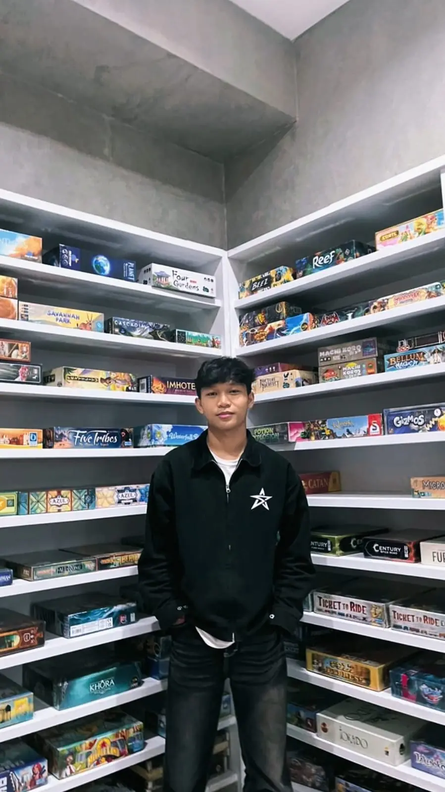
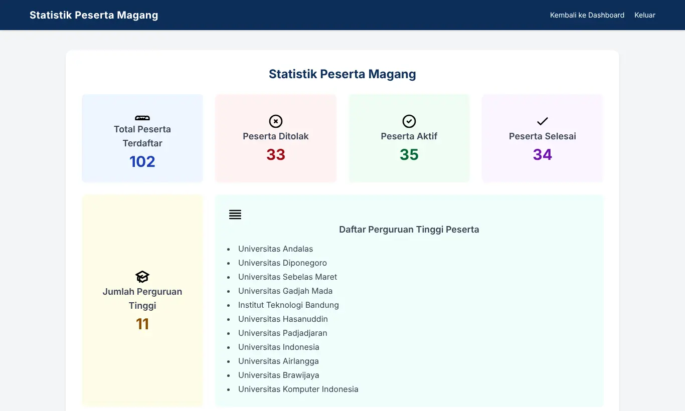

Des 2025 sampai Jan 2026
Bendahara, Panitia Rajaban Akbar
Mengelola keuangan acara sejak tahap penggalangan dana hingga pelaksanaan, mencakup lebih dari 90 transaksi dengan total dana terkumpul lebih dari Rp10 juta.
BNSPData Scientist
S1Sistem Informasi
Saya Bayu Setia Nugraha, lulusan S1 Sistem Informasi Universitas Komputer Indonesia yang berfokus pada analisis sistem dan pengembangan aplikasi web.
Fokus tersebut saya terapkan melalui sejumlah proyek, di antaranya pembangunan sistem pengelolaan stok untuk UMKM, prototipe sistem pendaftaran magang di instansi pemerintah, serta pengembangan sistem operasional usaha photo booth. Setiap proyek tersebut diawali dengan memahami kebutuhan pengguna, kemudian diterjemahkan menjadi rancangan dan sistem yang tepat guna.
Dalam pengerjaannya, saya menggunakan PHP, JavaScript, SQL, HTML, CSS, Laravel, Bootstrap, Tailwind CSS, dan MySQL untuk pengembangan sistem, Python untuk pengolahan data, serta UML, ERD, Draw.io, dan Figma untuk analisis dan perancangan. Pengelolaan kode dan data saya lakukan dengan Visual Studio Code, XAMPP, GitHub, dan Microsoft Excel.
Saya terbuka terhadap kesempatan magang maupun pekerjaan sebagai System Analyst atau Web Developer, dan siap berkontribusi dalam membangun sistem yang efektif dan bermanfaat bagi organisasi.

Bandung, Jawa Barat
Teknologi dan perangkat yang saya gunakan dalam pengerjaan proyek
Biro Umum, Sekretariat Daerah Provinsi Jawa Barat, Agustus sampai September 2025

Proses pendaftaran magang di Bagian Tata Usaha dan Kepegawaian sebelumnya masih dilakukan secara manual. Saya memetakan alur kerjanya bersama staf, kemudian membangun prototipe sistem pendaftaran berbasis web.
Des 2025 sampai Jan 2026
Mengelola keuangan acara sejak tahap penggalangan dana hingga pelaksanaan, mencakup lebih dari 90 transaksi dengan total dana terkumpul lebih dari Rp10 juta.
Jun 2025
Menjalankan kegiatan pendidikan dan budaya bersama warga Desa Cijambe, Ujungberung, meliputi kaulinan Sunda untuk anak-anak, pembagian Al-Qur'an, dan diskusi pengembangan UMKM.
2022 sampai 2026
Lulus pada 21 Agustus 2026 dengan predikat Cum Laude. Skripsi berjudul Sistem Informasi Pengelolaan Stok Berbasis Web pada UMKM Kevatie.
Des 2025 sampai Jan 2026
Mengelola dan mencatat lebih dari 90 transaksi keuangan acara dengan total dana terkumpul lebih dari Rp10 juta, serta menyampaikan laporan keuangan secara transparan dalam rapat panitia mingguan.
Agu 2025 sampai Sep 2025
Bagian Tata Usaha dan Kepegawaian. Menganalisis alur pendaftaran magang dan membangun prototipe sistem pendaftaran berbasis web.
Jun 2025
Tergabung dalam Kelompok Pendidikan Pajajaran pada program pemberdayaan masyarakat di Desa Cijambe, Ujungberung.